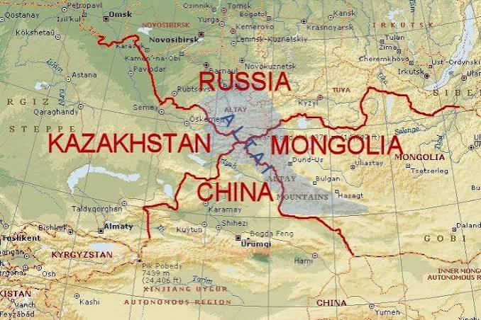

Altai | a land of mountains and wilderness
Altai is a spectacular region in southern Siberia, southwestern Russia, where towering mountains, turquoise lakes, glaciers and endless forests create some of the country's most breathtaking landscapes. Located near the borders of Kazakhstan, Mongolia and China, it is home to remarkable wildlife, including snow leopards, argali sheep and golden eagles.
Among its most impressive sights are Lake Teletskoye – a deep alpine lake surrounded by forest-covered mountains; Mount Belukha – Siberia's highest peak at 4,506 metres; and Chulyshman Valley, with its dramatic cliffs and winding mountain roads. Kyzyl-Chin, also known as “Altai Mars”, stands out for its colourful red and orange hills, while Geyser Lake is famous for its unusual turquoise patterns.

Itinerary
Day 1 – Arrival in Gorno-Altaysk
Arrive at Gorno-Altaysk Airport, with flights from Moscow or Novosibirsk. Pick up a pre-arranged rental car or meet a local driver and travel approximately 1–1.5 hours to Chemal. Explore the Katun River and surrounding mountain scenery. Overnight in a guesthouse in Chemal.
Day 2 – Chemal and the Katun River
Explore Patmos Island, connected to the mainland by a pedestrian bridge, and follow scenic walking paths along the turquoise Katun River. Visit the Chemal hydroelectric power station and enjoy the surrounding forests and mountains. Overnight in Chemal.
Day 3 – The Chuya Highway
Drive east along the famous Chuya Highway, passing Seminsky Pass and Chike-Taman Pass. Stop at viewpoints overlooking mountain valleys and the Katun River before continuing to Aktash. Overnight in a local guesthouse.
Day 4 – Kyzyl-Chin, the Altai Mars
Visit Kyzyl-Chin, also known as Altai Mars, famous for its colourful red, orange, yellow and purple hills. Explore the unusual geological formations and surrounding landscapes before returning to Aktash. Overnight in Aktash.
Day 5 – Geyser Lake and Kurai Steppe
Visit the turquoise Geyser Lake, famous for its unusual patterns created by mineral-rich springs. Continue to the Kurai Steppe, where the enormous North Chuya mountain range rises dramatically in the distance. Return to Aktash for the night.
Day 6 – Return to Gorno-Altaysk
Drive back along the Chuya Highway, enjoying the mountain passes, forests and river valleys along the way. Allow most of the day for the journey and scenic stops. Overnight in a hotel near Gorno-Altaysk.
Day 7 – Departure
Transfer to Gorno-Altaysk Airport and catch a flight to Moscow or Novosibirsk, where you can connect with your international flight home.
"""